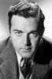

Country:United States, 68 minutes
Spoken languages:
Genres:Action, Adventure, Crime, Mystery, Thriller
Director(s):Roy William Neill
Writer(s):Scott Darling, Edward T. Lowe Jr., Edmund L. Hartmann
Video Codec:Unknown
Number: 1737


Certification:
Storyline:
In the midst of World War II, Sherlock Holmes rescues the Swiss inventor of a new bomb-sight from the Gestapo and brings him to England, where he shortly falls into the clutches of Professor Moriarty.
Cast: 


Medium: Original DVD,
Comments: Part of: Mystery Classics - 50 Movie Pack
Loaned: No
Aspect ratio: Unknown